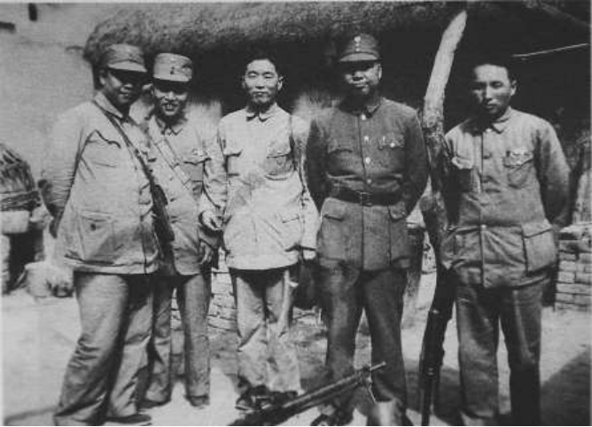

以笔为刃：范长江书写抗战史诗

抗日战争期间，随军记者作为战地记录的先锋，以笔和镜头为武器，真实记录了中华民族浴血抗战的历史。他们的作品不仅是重要的历史文献，更是激励全民抗战的精神力量。 范长江是抗日战争时期最具影响力的战地记者之一，他以犀利的笔锋、勇敢的精神和深刻的洞察力，记录了中国军民浴血抗战的壮烈历史。 1935—1936年，范长江以《大公报》记者身份深入中国西北地区，报道红军长征动向和西北社会状况，成为国内首个客观报道红军长征的记者。这些报道后来结集为《中国的西北角》，轰动全国，也为他日后抗战报道积累了声誉。1937年全面抗战爆发后，范长江主动请缨担任战地记者，先后报道了南口战役、淞沪会战、徐州会战、武汉会战等重大战役。他曾在炮火中穿越火线，多次与死神擦肩而过。 1938年3-4月，范长江深入台儿庄战场，与士兵同吃同住。他在《台儿庄血战记》中写道: "每一寸土地都是用鲜血换来的，守军士兵的手榴弹打光了，就用大刀和牙齿与日军搏斗。他记录下池峰城师长下令炸毁运河浮桥、背水一战的悲壮决定，以及士兵高呼"宁死不过运河"的场面，在报道中详细记载了日军使用毒气、屠杀平民的罪行，并将这些证据通过国际媒体公之于世。 1938年3月，范长江与夏衍等人在汉口发起成立"中国青年新闻记者学会，这是中国共产党领导的新闻界抗日统一战线组织。"青记"培养了数百名战地记者，成为抗战新闻宣传的中坚力量。